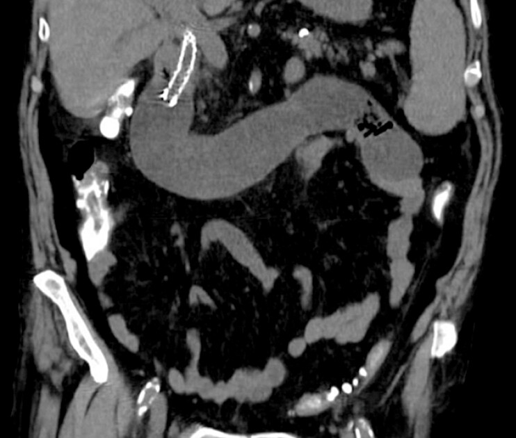
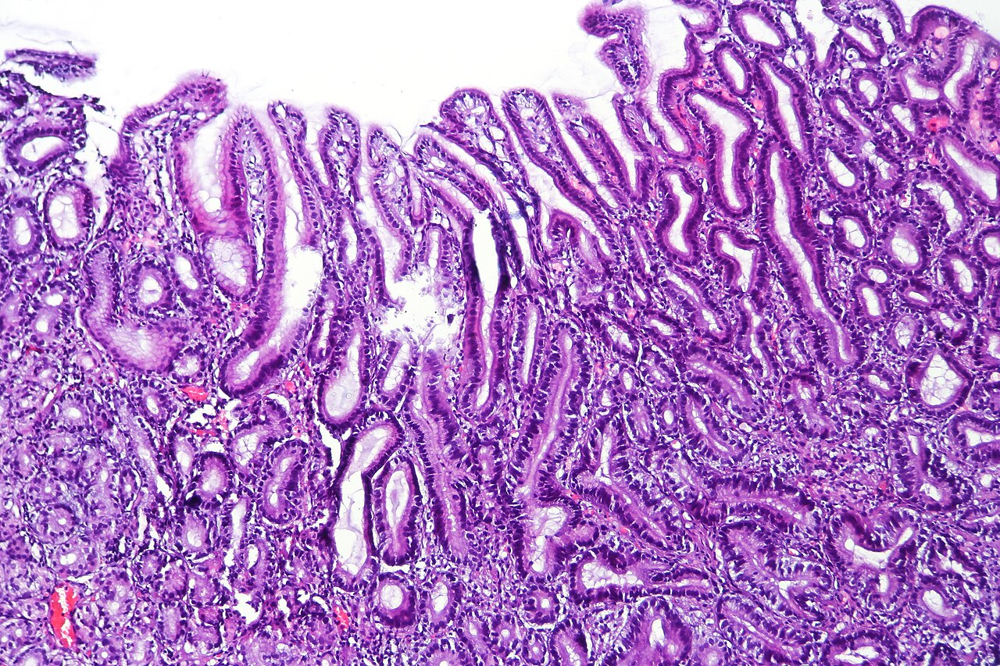

Болезнь оперированного желудка
Виды операций на желудке и анатомические последствия вмешательства
Любое вмешательство на желудке меняет физиологию пищеварения: удаление частей органа формирует новую анатомию и определяет риск развития постгастрорезекционных синдромов.
Резекция по Бильрот-I — удаление дистальной части желудка (2/3–3/4 органа) с прямым анастомозом между культёй и двенадцатиперстной кишкой (ДПК). Привратник удаляется. Пассаж пищи по ДПК сохраняется, но анастомоз не защищает от дуоденального рефлюкса. При рубцовой деформации ДПК или инфильтрате операция технически невыполнима из-за риска натяжения швов.[Кузин, с. 346]
Резекция по Бильрот-II (модификация Гофмейстера–Финстерера) — удаление 2/3–3/4 дистального желудка с наложением анастомоза на короткой приводящей петле тощей кишки; ДПК ушивается наглухо и выключается из пассажа. Через 15–20 лет после операции риск атрофического гастрита и дисплазии эпителия культи возрастает более чем в 4 раза; операция относится к факторам риска рака желудка.[Кузин, с. 299]
Ваготомия с пилоропластикой — органосберегающая операция (пересечение стволов или ветвей блуждающего нерва), дополняемая пилоропластикой (поперечным рассечением и ушиванием привратника). Привратник разрушается анатомически, пассаж по ДПК сохраняется. В 6–7 % случаев развивается лёгкий демпинг-синдром.[Кузин, с. 301]
Селективная проксимальная ваготомия (СПВ) — пересечение секреторных ветвей вагуса к фундусу и телу желудка при сохранении ветвей к антруму и привратнику (nervi Latarjet). Привратник функционирует нормально, пилоропластика не требуется (за исключением случаев дуоденального стеноза). Послеоперационная летальность составляет 0,3 % и менее. Рецидив пептической язвы наблюдается у 10–12 % больных из-за неполной ваготомии.[Кузин, с. 301]
Гастрэктомия — полное удаление желудка, большого и малого сальника, регионарных лимфоузлов с формированием эзофагоеюнального анастомоза (чаще по Ру). Длина выключенной петли от гастроеюнального до энтероэнтероанастомоза должна быть не менее 40–60 см для профилактики рефлюкс-эзофагита. ДПК полностью выключается из пассажа.[Кузин, с. 346]
| Операция | Что удаляется / разрушается | Сохраняется ли привратник | Сохраняется ли пассаж по ДПК |
|---|---|---|---|
| Резекция по Бильрот-I | Дистальный отдел желудка (2/3–3/4), антрум, привратник | Нет | Да |
| Резекция по Бильрот-II (мод. Гофмейстера–Финстерера) | Дистальный отдел желудка (2/3–3/4), антрум, привратник; ДПК ушивается наглухо | Нет | Нет |
| Ваготомия с пилоропластикой | Стволы блуждающего нерва (стволовая) или их ветви; привратник разрушается функционально при пилоропластике | Нет (разрушен) | Да |
| Селективная проксимальная ваготомия (СПВ) | Секреторные ветви вагуса к фундусу и телу желудка | Да | Да |
| Гастрэктомия | Весь желудок, большой и малый сальник, регионарные лимфоузлы | Нет (орган удалён) | Нет |
СПВ дает минимальный риск демпинга и дуоденогастрального рефлюкса при летальности до 0,3 %. Ваготомия с пилоропластикой несёт умеренный риск: лёгкий демпинг-синдром развивается у 6–7 % оперированных. Резекция в объёме антрумэктомии с анастомозом по Ру дает летальность около 1,5 %. Гастрэктомия неизбежно вызывает агастральные расстройства у всех пациентов.[Кузин, с. 299]
Патогенез расстройств после резекции желудка
Резекция желудка убирает три физиологических механизма: резервуар, затвор и маршрут.
Утрата резервуарной функции и рецептивной релаксации приводит к быстрому растяжению культи малым объёмом еды, росту давления и преждевременному сбросу химуса в кишку, из-за чего пациенты рано насыщаются и не добирают калорий.
Утрата привратника (эвакуаторного затвора) вызывает неконтролируемый сброс химуса в кишку единым потоком. В ответ на гиперосмолярную нагрузку происходит приток жидкости из сосудов в просвет кишки, её растяжение и ускорение перистальтики (ранний демпинг-синдром). При ваготомии с пилоропластикой лёгкий демпинг развивается в 6–7 % случаев.[Кузин, с. 301]
Нарушение синхронизации пищеварительных соков при выключении ДПК из пассажа (Бильрот-II) приводит к тому, что желчь и панкреатический сок смешиваются с пищей в тощей кишке с опозданием. Это нарушает гидролиз жиров, белков, углеводов и всасывание жирорастворимых витаминов. Для коррекции применяют гастроеюнодуоденопластику (интерпозицию петли тощей кишки длиной 15–20 см).[Кузин, с. 299]
Патогенетическая цепочка включает три этапа: анатомический дефект → функциональный сдвиг → метаболическое расстройство (дефицит витаминов, B₁₂, железодефицитная анемия, снижение массы тела).
Постгастрорезекционные синдромы объединяют функциональные и метаболические нарушения из-за утраты физиологии желудка. Они делятся на морфологические (синдром малого желудка, синдром приводящей петли, рефлюкс-гастрит) и функциональные (демпинг-синдром, диарея, мальабсорбция, анемия). После обширной дистальной резекции летальность составляет 3–5 %, а рецидивы язв возникают у 1–7 % больных.[Кузин, с. 299]
Классификация патологических синдромов после операций на желудке
Все расстройства оперированного желудка делятся на морфологические (в основе — анатомическое изменение, требуют реконструктивной операции) и функциональные (в основе — разбалансировка пищеварения, поддаются консервативному лечению).
| Синдром | Группа | Ведущий механизм | Типичная операция-предпосылка |
|---|---|---|---|
| Синдром малого желудка | Морфологический | Утрата резервуарной функции после удаления большей части органа | Обширная дистальная резекция (2/3–3/4 желудка) |
| Рецидив язвы | Морфологический | Сохранение кислотопродукции или оставленный антральный участок | Резекция по Бильрот-II; СПВ при неполной ваготомии |
| Синдром приводящей петли | Морфологический | Застой содержимого в слепом колене кишки при Бильрот-II | Резекция по Бильрот-II, особенно по Гофмейстеру–Финстереру |
| Рефлюкс-эзофагит | Морфологический | Заброс дуоденального содержимого через культю в пищевод | Гастрэктомия; Бильрот-II при короткой петле (<40–60 см) |
| Рефлюкс-гастрит | Морфологический | Повреждение слизистой желчными кислотами и лизолецитином | Бильрот-II по Гофмейстеру–Финстереру; ваготомия с пилоропластикой |
| Ранний демпинг-синдром | Функциональный | Быстрый сброс гиперосмолярного содержимого в кишку → перемещение жидкости в просвет | Любая резекция с удалением привратника; ваготомия с пилоропластикой (6–7 %) |
| Поздний демпинг-синдром (гипогликемический) | Функциональный | Гиперинсулинемия в ответ на раннюю демпинг-реакцию → падение глюкозы до 0,4–0,5 г/л | Резекция желудка; ваготомия с пилоропластикой |
| Диарея | Функциональный | Ускоренный транзит химуса, усиление моторики тонкой кишки | Стволовая ваготомия; резекция с широкой пилоропластикой |
| Мальабсорбция | Функциональный | Нарушение синхронизации пищи и пищеварительных соков → дефицит гидролиза жиров, белков, углеводов | Резекция по Бильрот-II; гастрэктомия |
| Анемия и метаболические расстройства | Функциональный | Дефицит всасывания витаминов (B12, железо), прогрессирующая потеря массы тела | Обширная резекция; гастрэктомия |
Синдром малого желудка обусловлен резекцией 2/3–3/4 органа: переполненая культя немедленно эвакуирует содержимое.
Синдром приводящей петли развиваются при Бильрот-II из-за застоя в слепом колене кишки; в раннем периоде грозит несостоятельностью культи ДПК, в позднем — холангитом, панкреатитом, циррозом печени.[Кузин, с. 323]
Повреждение слизистой желчными кислотами и лизолецитином вызывают рефлюкс-гастрит, а при забросе в пищевод — рефлюкс-эзофагит. Профилактика рефлюкс-синдромов при гастрэктомии требует длины петли по Ру от 40–60 см.[Кузин, с. 323]
Ранний демпинг-синдром возникает через 10–15 минут после еды из-за снижения ОЦК при притоке жидкости в кишку (слабость, тахикардия, головокружение). При ваготомии с пилоропластикой наблюдается в 6–7 % случаев, после СПВ (летальность ≤0,3 %) не встречается.[Кузин, с. 301]
Поздний демпинг-синдром (гипогликемический) развивается через 2–3 часа из-за выброса инсулина со снижением глюкозы крови до 0,4–0,5 г/л.
Синдром мальабсорбции вызван рассогласованием поступления пищи и соков, что нарушает переваривание жиров, белков, углеводов и ведёт к потере массы тела, авитаминозу и анемии.
Тип операции определяет спектр возможных осложнений: чем радикальнее вмешательство, тем длиннее список синдромов.[Кузин, с. 299]
Ранний демпинг-синдром: патогенез, клиника и степени тяжести
Ранний демпинг-синдром — комплекс гемодинамических и нейровегетативных расстройств, возникающих через 10—15 мин после еды из-за быстрого поступления гиперосмолярного желудочного содержимого в тонкую кишку.[Кузин, с. 319]
Патогенез включает четыре звенья: раздражение рецепторов кишечника гиперосмолярным химусом; осмотический сдвиг в тонкой кишке (переход жидкости из крови в просвет кишки); относительная гиповолемия и падение артериального давления; выброс вазоактивных медиаторов (серотонин, брадикинин, вазоактивный кишечный пептид), усиливающих моторику и расширяющих периферические сосуды.
Клинические симптомы: со стороны ЖКТ — тяжесть и распирание в эпигастрии, тошнота, скудная рвота, урчание, коликообразные боли, понос; со стороны ССС и НС — слабость, потливость, головокружение, сердцебиение, «приливы жара», предобморочное состояние, боли в области сердца. Из-за выраженной слабости больные вынуждены принимать горизонтальное положение.[Кузин, с. 320]
Степени тяжести:
I степень демпинг-синдрома (лёгкая): реакция только на сладкие и молочные блюда, пульс учащается не более чем на 15 ударов в 1 мин, приступ длится 15—30 мин. Масса тела не снижена, трудоспособность сохранена. Наблюдается в 6—7 % случаев после ваготомии с пилоропластикой при ширине отверстия более 2—3 см.[Кузин, с. 320]
II степень демпинг-синдрома (средняя): реакция на различные виды пищи, выражены потливость, сердцебиение, головокружение. Трудоспособность частично ограничена.
III степень демпинг-синдрома (тяжёлая): реакция после любой еды, обязательное горизонтальное положение, прогрессирующее похудание, нарушение всасывания. Трудоспособность стойко утрачена. Служит показанием к реконструктивной операции.[Кузин, с. 319]
Диагностика демпинг-синдрома
Диагностика включает три шага: сбор анамнеза, рентгенологическое исследование и оценку степени тяжести.[Кузин, с. 320]
Шаг первый: анамнез. Устанавливают интервал от приёма пищи до начала симптомов (10–15 минут — ранний демпинг; 2–3 часа — поздний) и провоцирующие блюда (сладкие, молочные, жидкие).
Шаг второй: рентгенологическое исследование. При рентгеноскопии с бариевой взвесью выявляются признак «провала» (быстрый переток контраста из культи в тощую кишку), ускоренный пассаж контраста и дистонические/дискинетические расстройства петель кишки.
Шаг третий: оценка степени тяжести. При I степени (реакция на сладкое и молочное, учащение пульса не более чем на 15 ударов в 1 мин, приступ 15–30 мин) и II степени (приступы после любой еды, вынужденное горизонтальное положение) проводиться консервативное лечение. III степень (тяжёлые симптомы после любой пищи, больной прикован к постели) — показание к реконструктивной операции.[Кузин, с. 320]
Поздний демпинг-синдром (гипогликемический синдром)
Развивается через 2—3 часа после приёма пищи.[Кузин, с. 319] Быстрый сброс химуса вызывает гипергликемию, приводящую к гиперинсулинемии после демпинга. Избыточный инсулин снижает уровень сахара с развитием реактивной гипогликемии.[Кузин, с. 323] В момент приступа глюкоза крови снижается до 0,4—0,5 г/л.[Кузин, с. 323]
Клиническая картина: слабость, дрожь, чувства голода, боли в эпигастрии, головокружение, сердцебиение, снижение АД (иногда брадикардия), потливость, возможна потеря сознания.[Кузин, с. 323]
Патогномоничный признак — быстрое купирование приступа приёмом углеводов.[Кузин, с. 323] После ваготомии с пилоропластикой лёгкий демпинг наблюдается в 6—7 % случаев; после СПВ без разрушения привратника (летальность 0,3 % и менее) поздний демпинг практически не встречается.[Кузин, с. 301]
Лечение демпинг-синдрома
Лечение проводится поэтапно:
Первый шаг — диетическая коррекция. Дробное питание (6–7 раз в сутки) небольшими порциями лёжа или полулёжа, раздельный приём твёрдой и жидкой пищи. Исключаются сладкие, молочные блюда и концентрированные каши.[Кузин, с. 321]
Второй шаг — медикаментозная нормализация моторики. Назначают Метоклопрамид (антагонист дофаминовых рецепторов), цизаприд (агонист 5-HT₄-рецепторов) и сульпирид.
Третий шаг — реконструктивная операция. Показана при III степени тяжести и неэффективности консервативного лечения в течение 3–6 месяцев. При исходном Бильрот-II выполняют гастроеюнодуоденопластику с интерпозицией петли тощей кишки длиной 15–20 см[Кузин, с. 299] либо накладывают анастомоз по Ру (анастомоз Roux-en-Y) с длиной выключенной петли 40–60 см.[Кузин, с. 321, 346]
Синдром приводящей петли
При резекции по Бильрот-II (особенно Гофмейстер–Финстерер) нарушение оттока из приводящей петли вызывает дуоденостаз — застой желчи и панкреатического сока.[Кузин, с. 298, 299]

В раннем периоде высокое давление вызывает несостоятельность культи двенадцатиперстной кишки.[Кузин, с. 324] В позднем периоде возникают боли в эпигастрии и правом подреберье после еды и обильная рвота желчью, приносящая облегчение. Осложнения: холецистит, холангит, панкреатит, дисбактериоз, цирроз печени, рефлюкс-гастрит и рефлюкс-эзофагит.[Кузин, с. 324] На КТ определяется непроходимость и расширение приводящей петли.[Кузин, с. 323] Рентгенологически выявляется задержка контраста в петле.[Кузин, с. 324]
Консервативное лечение включает эндоскопическое дренирование зондом, антибактериальную терапию, прокинетики и антациды.[Кузин, с. 324] Хирургическое лечение — реконструкция с анастомозом на выключенной по Ру петле длиной 40–60 см (послеоперационная летальность около 1,5 %) или гастроеюнодуоденопластика с интерпозицией петли 15–20 см.[Кузин, с. 299]
Рефлюкс-гастрит и рефлюкс-эзофагит как синдромы оперированного желудка
После резекции желудка или ваготомии с пилоропластикой разрушение привратника приводит к беспрепятственному забросу содержимого двенадцатиперстной кишки (желчных кислот, лизолецитина, панкреатического сока) в культю. Это повреждает слизистый барьер и вызывает билиарный рефлюкс-гастрит (или щелочной рефлюкс-гастрит).[Кузин, с. 324]

Наиболее частой анатомической основой служит анастомоз по Гофмейстеру–Финстереру, при котором дуоденальное содержимое заносится в культю при каждом приёме пищи. Пилоропластика при стволовой ваготомии и резекция по Бильрот-I также создают условия для дуоденогастрального рефлюкса.[Кузин, с. 299]
Клиническая картина рефлюкс-гастрита включает тупую или жгучую боль в эпигастрии после еды, горечь во рту, срыгивание и рвоту без облегчения, а со временем — гипо- и ахлоргидрию, анемию, похудание и метаплазию эпителия (фон для рака культи).[Кузин, с. 324] Гистологически выявляется гиперплазия ямочного эпителия и дистрофия поверхностных клеток без выраженной воспалительной инфильтрации.
При попадании дуоденального содержимого в пищевод развивается рефлюкс-эзофагит, проявляющийся изжогой и дисфагией, а морфологически — воспалительной инфильтрацией, эрозиями и метаплазией плоского эпителия в цилиндрический (пищевод Баррета).
Профилактирует рефлюкс выключенная петля по Ру длиной от гастроеюнального анастомоза до энтероэнтероанастомоза не менее 40–60 см, препятствующая подъёму желчи и панкреатического сока. Послеоперационная летальность при гастроеюнальном анастомозе на выключенной по Ру петле составляет около 1,5 %. Выбор анастомоза на первичной операции определяет, разовьётся ли рефлюкс-гастрит вообще.[Кузин, с. 299]
Рецидив язвы после операций на желудке
После резекции по Бильрот-II рецидив наблюдается в 2—3 % случаев в отводящей петле тощей кишки в виде пептической язвы тощей кишки (ulcus pepticum jejuni).[Кузин, с. 319, 327] Её опаснейшее осложнение — пенетрация в поперечную ободочную кишку с формированием желудочно-тонко-толстокишечного свища (fistula gastrojejunocolica), проявляющегося триадой: профузный понос, рвота с примесью кала и резкое похудание.[Кузин, с. 328]
После селективной проксимальной ваготомии (СПВ) летальность составляет 0,3 % и менее, но рецидив язвы в ДПК или желудке происходит у 10—12 % больных из-за неполной ваготомии (сохранения кислотопродукции при пропуске ветвей блуждающего нерва).[Кузин, с. 301]
Диагностика базируется на эндоскопии и рентгенологическом исследовании. Консервативное лечение рецидива проводят по триплексной схеме (один антисекреторный препарат и два антибиотика для эрадикации Helicobacter pylori).[Кузин, с. 328]
При неэффективности терапии или осложнениях (кровотечение, перфорация, свищ) выполняют реконструктивные операции: после Бильрот-II — стволовую ваготомию или более высокую резекцию желудка (с реконструкцией анастомоза по Ру); после СПВ — антрум-резекцию со стволовой ваготомией и анастомозом по Ру. Летальность при реконструкциях на выключенной петле по Ру составляет около 1,5 %.[Кузин, с. 328]
Главный вывод раздела: частота рецидива и его природа прямо зависят от типа первичной операции — 2—3 % после резекции по Бильрот-II с возможным свищом как крайним осложнением, и 10—12 % после СПВ вследствие неполной ваготомии; лечение строится по триплексной схеме, а при её неэффективности — реконструктивно.[Кузин, с. 328]
Мальабсорбция и агастральная астения после резекции желудка
При резекции по Бильрот-II исключение двенадцатиперстной кишки из пассажа пищи приводит к десинхронизации пищеварительных соков: химус поступает в тощую кишку раньше желчи и панкреатических ферментов. В результате ферментативный гидролиз протекает неполноценно, вызывая мальабсорбцию — нарушение всасывания питательных веществ. В первую очередь страдают жиры (стеаторея), а также белки и углеводы.
Утрата париетальных клеток и внутреннего фактора Касла приводит к развитию B₁₂-дефицитной (мегалобластической) анемии. Из-за исключения ДПК и дефицита соляной кислоты нарушается всасывание железа (железодефицитная анемия). Нарушение всасывания жирорастворимых витаминов (A, D, E, K) и кальция приводит к авитаминозу после гастрэктомии (сухость кожи, глоссит, нейропатия, остеопороз).[Кузин, с. 326]
| Нутриент | Механизм нарушения всасывания | Клиническое проявление |
|---|---|---|
| Жиры | Десинхронизация поступления липазы и желчных кислот; быстрый транзит мимо ДПК при Бильрот-II | Стеаторея, снижение массы тела, дефицит жирорастворимых витаминов |
| Белки | Недостаточный контакт с трипсином и химотрипсином вследствие десинхронизации | Гипопротеинемия, похудание, мышечная слабость |
| Углеводы | Ускоренный пассаж; снижение активности кишечных дисахаридаз на фоне атрофии слизистой | Метеоризм, осмотическая диарея |
| Витамин B₁₂ | Утрата внутреннего фактора Касла после удаления париетальных клеток; нарушение всасывания в подвздошной кишке | Мегалобластическая анемия, периферическая нейропатия |
| Железо | Исключение ДПК из пассажа; дефицит соляной кислоты, необходимой для перевода Fe³⁺ в Fe²⁺ | Железодефицитная анемия |
| Витамины A, D, E, K | Стеаторея — жирорастворимые витамины уходят со стулом вместе с нерасщеплёнными жирами | Остеопороз, нарушение свёртывания, сухость кожи |
| Кальций | Дефицит витамина D; снижение растворимости солей кальция при ахлоргидрии | Остеопороз, судороги |
Суммарным следствием дефицитов становится агастральная астения (слабость, похудание, снижение трудоспособности). В первый год после резекции около половины больных находятся на инвалидности, а 15—30 % становятся инвалидами пожизненно.[Кузин, с. 299]
Лечение включает пожизненные инъекции витамина B₁₂, препараты железа, ферменты с высоким содержанием липазы и дробное высококалорийное питание. При неэффективности проводят реконструктивную операцию с восстановлением дуоденального пассажа.
Главный вывод раздела: мальабсорбция после резекции желудка — не единый синдром, а наложение нескольких дефицитов, каждый из которых требует собственного лечения; анатомическим ключом к большинству из них служит исключение двенадцатиперстной кишки из пассажа пищи при операции по Бильрот-II.[Кузин, с. 299]
Постваготомические синдромы: демпинг и диарея при различных видах ваготомии
Ваготомия — органосберегающая операция, и исход для пациента определяется тем, был ли сохранён привратник.[Кузин, с. 328]
| Тип ваготомии | Сохранность привратника | Риск демпинг-синдрома | Риск постваготомической диареи |
|---|---|---|---|
| Стволовая ваготомия с пилоропластикой | Привратник разрушен | 6–7 %, преимущественно лёгкая степень; реже — средняя; зависит от ширины отверстия (>2–3 см) | Умеренный: неконтролируемый сброс содержимого в кишку |
| СПВ с дренирующей операцией (при стенозе) | Привратник разрушен или шунтирован | Редко, лёгкая степень | Редко; дренирующая операция снижает преимущества СПВ |
| СПВ без пилоропластики | Привратник сохранён | Как правило, не возникает | Как правило, не возникает |
После стволовой ваготомии выполняют дренирующую операцию (пилоропластику по Гейнеке–Микуличу, гастродуоденостомию по Жабуле и др.), без которой привратник не откроется. Разрушение привратника приводит к неконтролируемому сбросу содержимого в тонкую кишку — так возникает постваготомическая диарея (жидкий стул из-за ускоренного и неравномерного поступления химуса в кишечник).[Кузин, с. 301]
Демпинг-синдром после ваготомии с пилоропластикой возникает в 6–7 % случаев (примерно на порядок ниже, чем после резекции двух третей желудка с анастомозом по Гофмейстеру–Финстереру), протекает в лёгкой или реже средней степени и поддаётся консервативному лечению. Риск возрастает, если ширина отверстия при пилоропластике или гастродуоденостомии по Жабуле превышает 2–3 см. Симптомы раннего демпинга появляются через 10–15 мин после еды (особенно сладкой и молочной).[Кузин, с. 320]
При селективной проксимальной ваготомии (СПВ) без пилоропластики привратник сохранён, поэтому демпинг-синдром и диарея обычно не возникают. Послеоперационная летальность при СПВ составляет 0,3 % и менее — в пять раз ниже летальности при ваготомии с пилоропластикой и антрумэктомией по Ру (около 1,5 %) и в 10–15 раз ниже летальности при обширной дистальной резекции (3–5 %). По этой причине СПВ без дренирующей операции — стандарт при язве двенадцатиперстной кишки без стеноза.[Кузин, с. 301]
При стенозе к СПВ добавляют дуоденопластику, лучше сохраняющую функцию привратника. Рецидив пептической язвы после СПВ наблюдается у 10–12 % больных и чаще связан с неполной ваготомией.[Кузин, с. 301]
Главный вывод: риск постваготомических функциональных осложнений определяется судьбой привратника. Сохранён — демпинг и диарея практически исключены; разрушен дренирующей операцией — демпинг возникает в 6–7 % случаев, а его тяжесть зависит от ширины созданного отверстия.[Кузин, с. 301]
Источники
- Госпитальная хирургия. Синдромология. Миланов 2013
- Хирургические болезни. Кузин
Иллюстрации
- Europe PMC, CC BY, https://europepmc.org/article/PMC/PMC13095388
- Wikimedia Commons, CC BY-SA 4.0, https://commons.wikimedia.org/wiki/File%3AReactive_gastropathy_of_the_oxyntic_mucosa%2C_intermed._mag.1.jpg